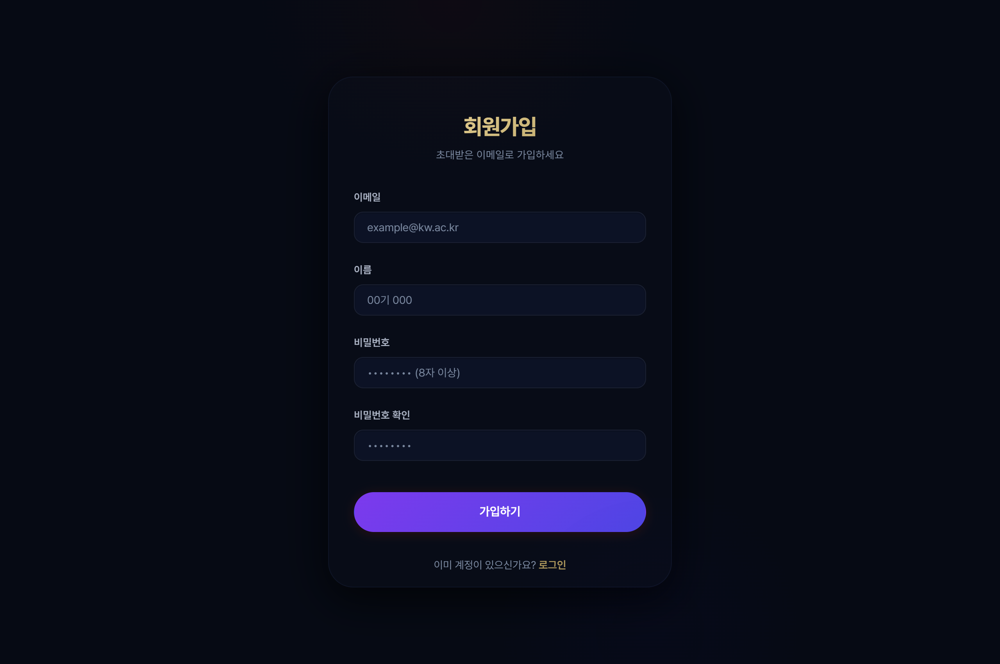
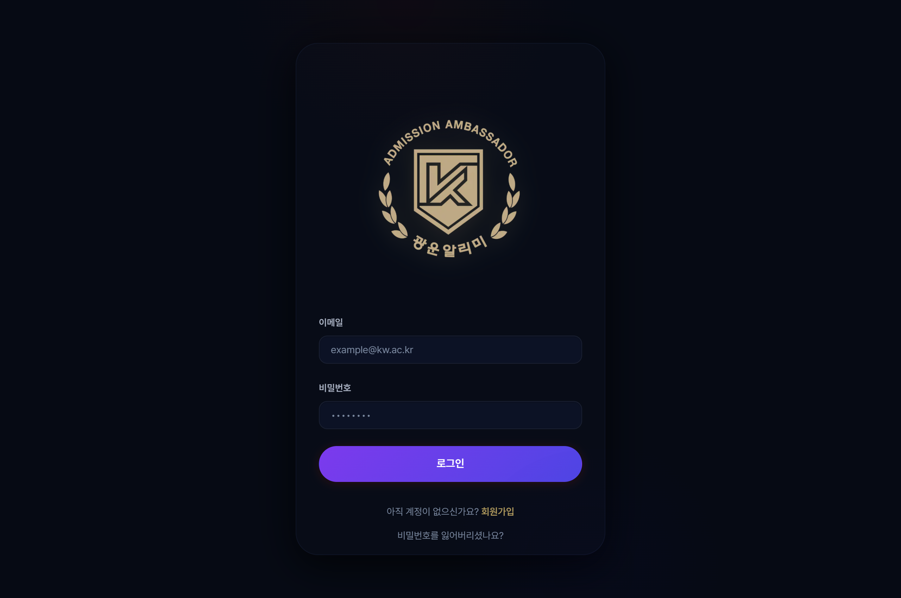
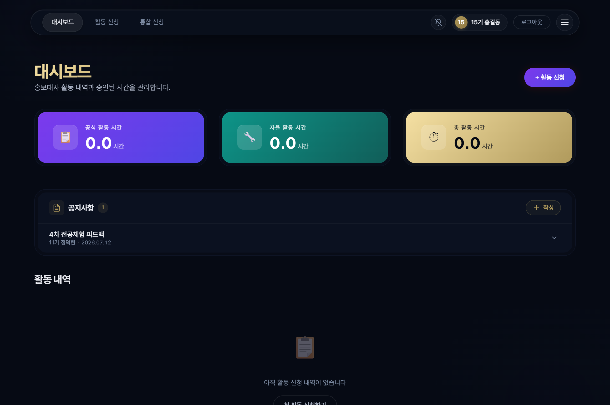
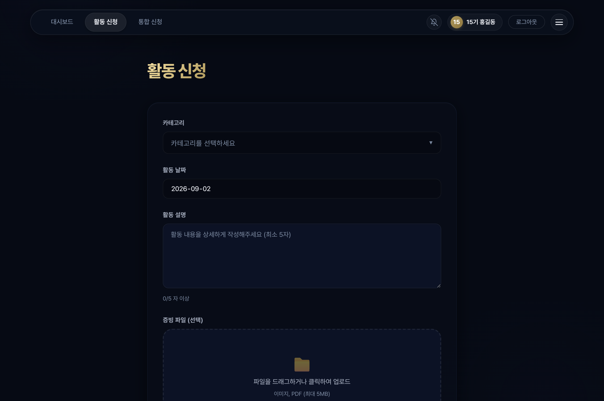
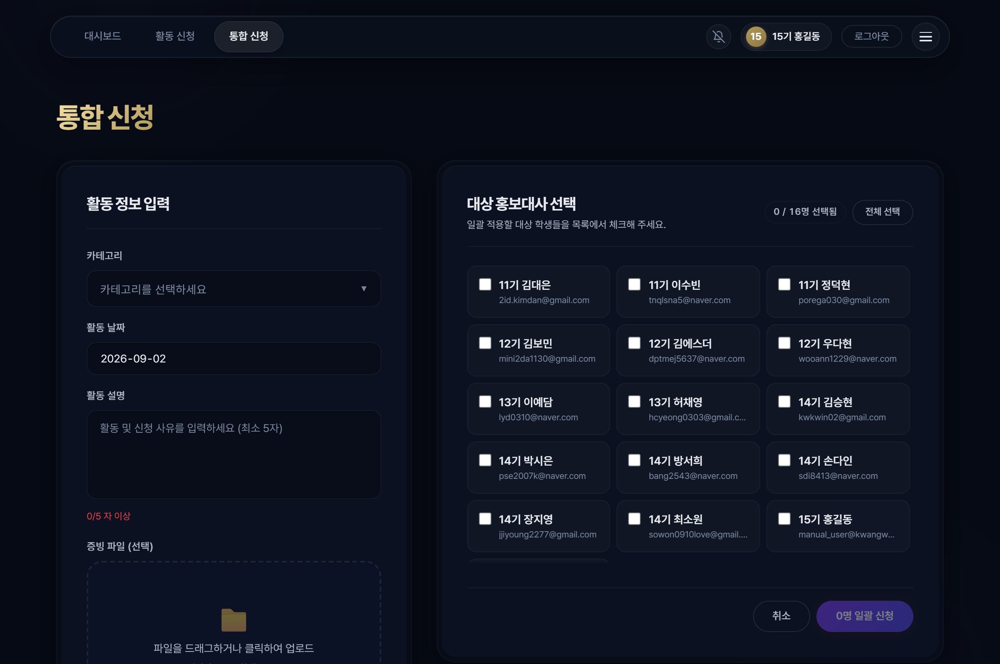
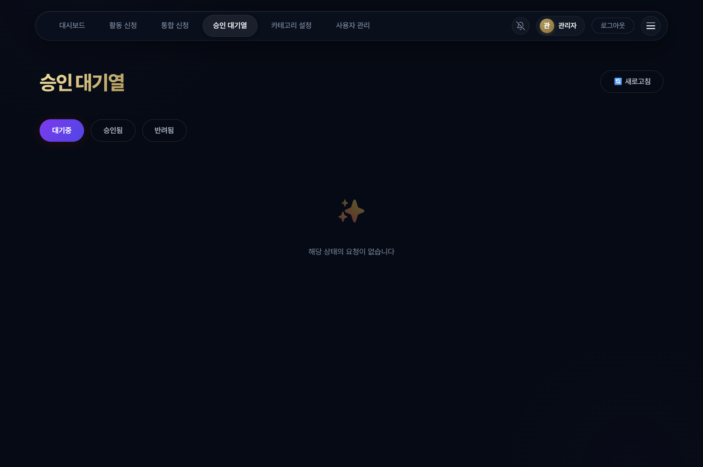
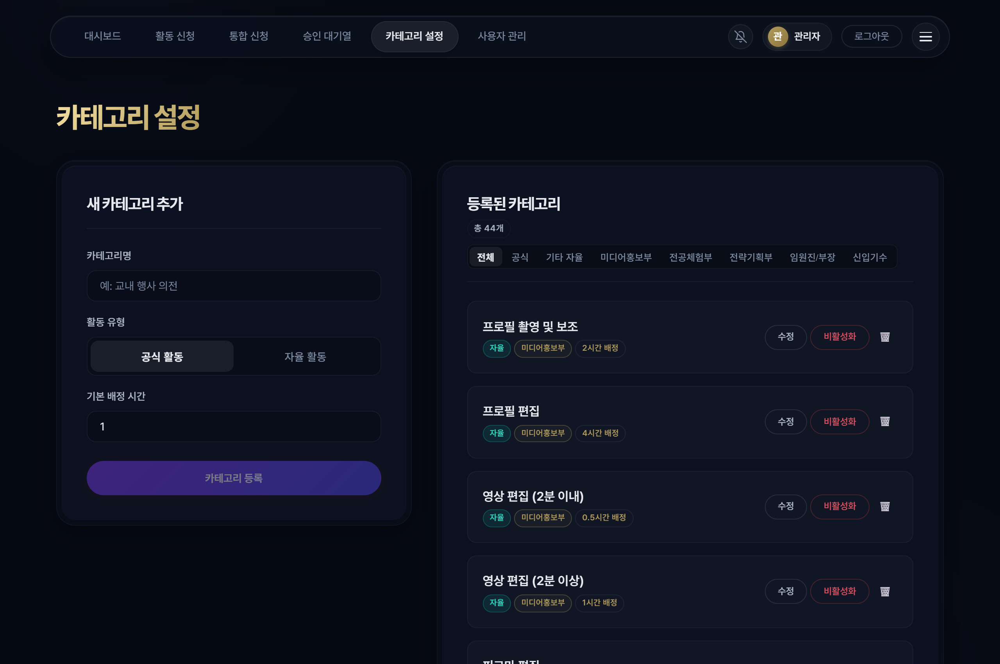
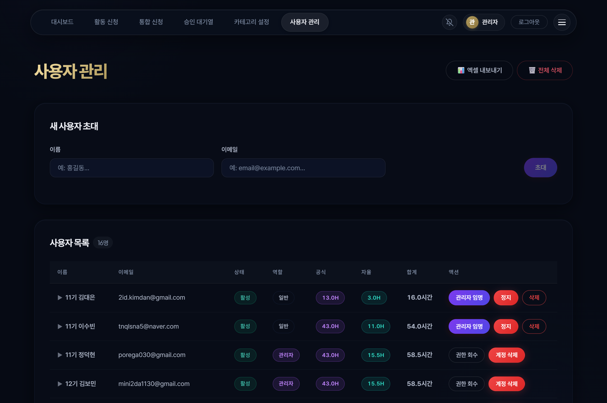

KWANGWOON UNIVERSITY ADMISSIONS AMBASSADOR
광운알리미 시간 관리 시스템
이용자 매뉴얼 (단원용)
활동 시간 신청부터 승인 및 누적 관리까지
알기 쉬운 단원 실무 가이드
광운알리미 시간 관리 시스템은 우리 대학 입학홍보대사 단원들이 참여한 전공체험, 모의전형 행사, 부서별 콘텐츠 제작 시간을 간편하게 기록하고 인정받을 수 있도록 만든 전용 공간입니다. 컴퓨터는 물론 스마트폰에서도 전용 앱처럼 편리하게 이용할 수 있습니다.
관리자에게 사전에 제출한 본인의 공식 이메일 주소로 본인 인증을 거쳐 계정을 활성화합니다.
ambassador-hours.vercel.app/signup
회원가입 화면

2.1 회원가입 순서
-
STEP 1
인터넷 주소창에 회원가입 주소를 입력하고 접속합니다.
-
STEP 2
이메일 입력: 관리자에게 미리 알려준 구글 또는 네이버 이메일을 정확히 적습니다.
-
STEP 3
이름 입력: 기수와 본인 실명을 한 칸 띄워서 적습니다. (예: 15기 홍길동) 기수가 포함되어야 시스템에서 기수별 집계가 정확히 이루어집니다.
-
STEP 4
비밀번호 설정: 안전하게 6자리 이상으로 설정하고 확인 칸에 한 번 더 입력합니다.
-
STEP 5
회원가입 버튼을 누르면 즉시 가입이 완료되고 자동으로 로그인됩니다.
⚠️ 가입 유의사항: 관리자가 미리 등록해 두지 않은 이메일로 가입을 시도하면 가입할 수 없다는 안내가 나타납니다. 이메일이 바뀌었거나 가입이 안 될 때는 회장단이나 담당 관리자에게 등록을 요청해 주시기 바랍니다.
ambassador-hours.vercel.app/login
로그인 화면

3.1 비밀번호를 잊어버렸을 때
비밀번호 입력창 아래에 있는 [비밀번호를 잊으셨나요] 글자를 누르고 가입한 이메일을 입력합니다. 내 메일함으로 전송된 비밀번호 재설정 링크를 클릭하여 새로운 비밀번호를 즉시 설정할 수 있습니다.
대시보드는 로그인 시 가장 먼저 나타나는 메인 화면으로, 내가 지금까지 승인받은 총 누적 시간과 현재 심사 현황을 한눈에 확인할 수 있습니다.
ambassador-hours.vercel.app/dashboard
단원 대시보드 화면

4.1 3대 핵심 현황 카드
관리자의 검토가 완료되어 정식 인정된 시간입니다. 카드 하단에 공식 행사와 자율 활동 시간이 각각 나누어 집계됩니다.
제출을 마쳤으나 아직 관리자가 확인하기 전인 신청서입니다. 이 상태에서는 내용을 자유롭게 수정하거나 취소할 수 있습니다.
증빙 사진이나 내용 보완이 필요한 신청서입니다. 반려 사유를 확인하고 수정하여 다시 제출하면 재심사를 받게 됩니다.
카드뉴스 제작, 영상 편집, 키트 포장 등 단독으로 진행한 활동 시간을 등록하는 화면입니다.
ambassador-hours.vercel.app/dashboard/new
개별 신청 화면

5.1 활동 신청서 작성 요령
-
STEP 1
카테고리 선택: 내가 속한 부서와 실제 진행한 과업 이름을 선택합니다.
-
STEP 2
활동 날짜 선택: 실제 활동을 진행한 날짜를 달력에서 고릅니다.
-
STEP 3
인정 시간 확인: 정해진 활동은 기본 시간이 자동 입력되며, 자율 활동은 0.5시간 단위로 직접 입력합니다. (1회 최대 시간 규정 적용)
-
STEP 4
활동 내용 상세 서술: 대상과 역할을 명확히 적습니다. (예: 고등학생 35명 대상 전공체험 인솔 및 전자공학과 멘토링 진행)
-
STEP 5
증빙 사진 첨부: 단복 착용 현장 사진이나 완성된 콘텐츠 캡처를 첨부하고 신청 버튼을 누릅니다.
전공체험이나 모의전형 행사처럼 여러 단원이 함께 참여한 활동은 대표자 1명이 모든 동료의 시간을 일괄 신청할 수 있습니다.
ambassador-hours.vercel.app/dashboard/bulk
통합 신청 화면

6.1 통합 신청 방법
-
STEP 1
상단 메뉴에서 [통합 신청]을 클릭합니다.
-
STEP 2
진행한 행사 이름과 활동 일자를 지정합니다.
-
STEP 3
명단에서 함께 참여한 동료들의 이름 옆 체크박스를 누릅니다. (전체 선택 기능 지원)
-
STEP 4
대표 사진 1장과 활동 내용을 적고 제출하면, 선택된 모든 단원의 대시보드에 개별 신청서가 자동 분할 생성됩니다.
대시보드 하단 목록에서 각 신청 카드의 상태에 따라 다음과 같이 대처할 수 있습니다.
-
대기중
관리자가 심사하기 전 상태입니다. 카드의 [수정] 버튼으로 내용을 고치거나 [삭제] 버튼으로 취소할 수 있습니다.
-
승인됨
시간이 정식 적립 완료된 확정 데이터입니다. 임의로 수정하거나 삭제할 수 없습니다.
-
반려됨
보완이 필요한 상태입니다. 관리자가 남긴 사유를 확인하고 수정하여 다시 제출할 수 있습니다.
신청이 반려되더라도 아래 순서에 따라 보완하면 신속하게 승인받을 수 있습니다.
-
1
대시보드 필터에서 [반려됨] 탭을 클릭합니다.
-
2
카드 안에 빨간 글씨로 적힌 반려 사유를 꼼꼼히 확인합니다. (예: 단복 착용 사진 누락)
-
3
카드의 [수정] 버튼을 누르고 지적된 사진이나 설명 글을 알맞게 보완합니다.
-
4
[저장] 버튼을 누르면 즉시 대기중 상태로 전환되어 재심사가 진행됩니다.
대시보드 상단의 공지 보드에서 마감 일정 및 중요 공지를 확인하세요. 또한 우측 상단의 종 모양 아이콘을 눌러 브라우저 푸시 알림을 허용해 두면, 승인 축하 알림 및 반려 사유 알림을 스마트폰으로 즉시 받아볼 수 있습니다.
KWANGWOON ALIMI AMBASSADOR MANAGEMENT
광운알리미 시간 관리 시스템
운영자 매뉴얼 (관리자용)
신청서 심사 및 승인부터 규정 설정,
계정 관리 및 장학금 정산 엑셀 내보내기 가이드
관리자 계정으로 로그인하면 상단 메뉴 바에 3대 관리자 전용 관제 메뉴가 활성화됩니다.
-
승인 대기열
제출된 신청서를 심사하여 승인/반려하고, 과거 승인 건을 취소하여 시간을 차감하는 관제 화면입니다.
-
카테고리 설정
공식 행사 및 5개 부서별 과업의 기본 인정 시간과 1회당 최대 시간 상한선을 설정하는 규정 화면입니다.
-
사용자 관리
신입 단원 초대, 관리자 권한 부여, 단원별 실적 분석 차트 확인 및 정산용 엑셀 다운로드를 수행합니다.
ambassador-hours.vercel.app/admin
승인 대기열 관제 화면

2.1 심사 시 확인해야 할 3대 핵심 기준
-
기준 1
날짜와 신청 시간: 실제 행사가 진행된 일자가 맞는지, 자율 활동 시간이 적절하게 산정되었는지 점검합니다.
-
기준 2
활동 서술 구체성: 어떤 학교 대상, 어떤 멘토링/제작을 수행했는지 충실히 적혔는지 확인합니다.
-
기준 3
증빙 파일 원본 점검: 첨부파일 링크를 눌러 단복/명찰을 착용한 본인의 모습이 명확한지 확인합니다.
서류 미비 건은 카드의 빨간색 [반려] 버튼을 누르고 단원이 쉽게 수정할 수 있도록 구체적인 가이드를 남겨줍니다. (예: 단복 착용 현장 사진이 누락되었습니다. 단복 사진으로 교체해 주시면 즉시 승인해 드리겠습니다.) 사유는 단원의 스마트폰으로 즉시 푸시 발송됩니다.
착오로 승인했거나 중복 신청된 내역은 [승인된 요청] 탭에서 언제든 [삭제]할 수 있습니다. 삭제 시 시스템 내부에서 해당 단원(통합 신청의 경우 포함된 모든 단원)의 누적 시간에서 해당 시간이 실시간으로 자동 차감됩니다.
ambassador-hours.vercel.app/admin/categories
카테고리 규정 설정 화면

5.1 카테고리 설정 주요 항목
-
인정 시간
정해진 고정 활동은 0.5~5.0시간을 입력하고, 자율 입력 활동은 0으로 지정합니다.
-
최대 제한
과도한 시간 청구를 방지하기 위해 1회당 최대 인정 시간(예: 4.0시간)을 설정하여 단원의 입력을 제한합니다.
-
활성화 스위치
비활성화 시 기존 누적 데이터는 보존되며 단원 신청 화면에서만 안전하게 숨김 처리됩니다.
ambassador-hours.vercel.app/admin/users
사용자 관리 & 엑셀 내보내기

6.1 신입 단원 초대 및 권한 인계
사용자 목록에서 단원 카드를 클릭하면 전공체험/모의전형 횟수와 부서별 카드뉴스 제작 건수 등 카테고리별 수행 비중 막대그래프가 펼쳐져 특정 업무 쏠림을 방지하고 고른 업무 배분을 지원합니다.
학기 말에 장학금 지급 결재를 올릴 때 가장 유용하게 쓰는 기능입니다.
8.1 추천하는 학기말 정산 순서
-
STEP 1
대기 목록 일괄 심사: 승인 대기열로 이동하여 처리되지 않은 신청서들을 모두 심사 완료합니다.
-
STEP 2
정산 엑셀 파일 다운로드: 사용자 관리 화면 우측 상단의 [정산 데이터 엑셀 다운로드] 버튼을 누릅니다.
-
STEP 3
정산 내역 확인: 전체 단원의 기수, 성명, 이메일, 공식 활동 시간, 자율 활동 시간, 총 누적 합계가 정리된 엑셀 파일을 확인합니다.
대시보드에서 [공지 작성] 버튼을 누르고 중요한 글은 [상단 고정]을 체크하여 항상 최상단에 노출시킬 수 있습니다. 관리자의 모든 승인/반려 조치는 단원들에게 실시간 푸시 알림으로 전달됩니다.